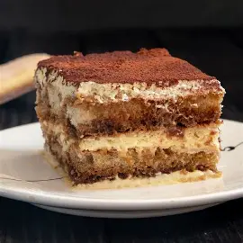

|
Tiramisu recipe
Tiramisu is an Italian dish that is beloved not only in Italy but all around the world. It is incredibly accessible in virtually every bakery, and while it is quite simple to make, but it does require a significant amount of time to prepare.
|

|
Ingredients
-
 200 to 250 g of Ladyfingers (Savoiardi)
200 to 250 g of Ladyfingers (Savoiardi)
-
 500g of Mascarpone cheese
500g of Mascarpone cheese
-
 350 ml of Strong espresso (cooled)
350 ml of Strong espresso (cooled)
-
 4 large Eggs
4 large Eggs
-
 100g of Sugar
100g of Sugar
-
2 to 3 tablespoons of Cocoa powder for dusting
|
|
Total Time: 6 hours, 30 minutes
Active Prep: 30 minutes
Chilling Time: 6 hours (minimum)
|
Step 1: Setup & Cream
|
Prep and the Cream Base
Brew 350ml of strong espresso and set it aside to cool completely; the coffee must be cold enough to prevent the ladyfingers from disintegrating later. Additionally, ensure that your 500g of Mascarpone has softened to room temperature for at least 30 minutes to guarantee a smooth, lump-free cream base.
Next, carefully separate 4 large eggs, placing the yolks and whites into two separate, clean bowls. In the first bowl, whisk the yolks with 75g of granulated sugar for 3–5 minutes until the mixture is thick and a very pale yellow.
Once the yolks are airy, gently fold in the softened mascarpone with a spatula until just combined.
Note: Be careful not to over-mix at this stage, as the cheese can become oily if beaten too hard; you are looking for a silky, thick custard texture.
|
Step 2
|
Whipping and Folding the Egg Whites
Before whipping, ensure your second bowl is spotlessly clean; any leftover grease will prevent the whites from whipping. Beat the 4 egg whites until frothy, then slowly stream in the remaining 25g of sugar. Continue beating until you reach glossy, stiff peaks—when you pull the whisk out, the foam should stand straight up without curling over at the tip.
To combine, sacrifice about one-third of the whipped whites by stirring them vigorously into the mascarpone base to "lighten" it. Then, add the rest of the whites and use a spatula to gently fold them in: cut straight down the middle, scrape along the bottom, and fold over the top while rotating the bowl. This preserves the trapped air, giving the tiramisu a cloud-like texture.
|
Step 3
|
The Quick Coffee Dip
Pour your completely cooled espresso into a shallow, wide-brimmed dish. Take a ladyfinger and do a rapid "roll" through the espresso—literally one second on the top, one second on the bottom. Do not submerge them.
When you pull them out, they should still feel completely dry and hard in the center. Arrange them snugly in a 9x9 inch dish. If there are gaps around the edges of your pan, snap a few dry ladyfingers into smaller pieces to fill the spaces perfectly so you have a solid foundation.
|
Step 4
|
Structural Layering
Spoon exactly half of your mascarpone cream over the ladyfingers. Use an offset spatula or the back of a large spoon to spread it evenly, making sure to push the cream all the way into the corners of the dish so every slice looks uniform.
Repeat the dipping process for your second layer of ladyfingers. Lay them gently on top of the cream, ideally facing the opposite direction (perpendicular) to the first layer—this acts like cross-beams in a house and gives the dessert better structural integrity when cutting. Top with the remaining cream and smooth the surface perfectly flat.
|
Step 5
|
The Transformation and Finish
Wipe the edges of your dish clean, then cover it tightly with plastic wrap, ensuring the wrap doesn't touch the surface of the cream. Place it in the refrigerator for a minimum of 6 hours, though 12 to 24 hours is highly recommended. During this resting phase, the dry centers of the ladyfingers will absorb the moisture from the cream, transforming into a tender, cake-like crumb.
Right before serving, use a fine-mesh sieve to dust a thick, even layer of unsweetened cocoa powder over the top. Waiting until the very end prevents the cocoa from absorbing moisture and turning into a dark, bitter paste in the fridge.
|
|
|